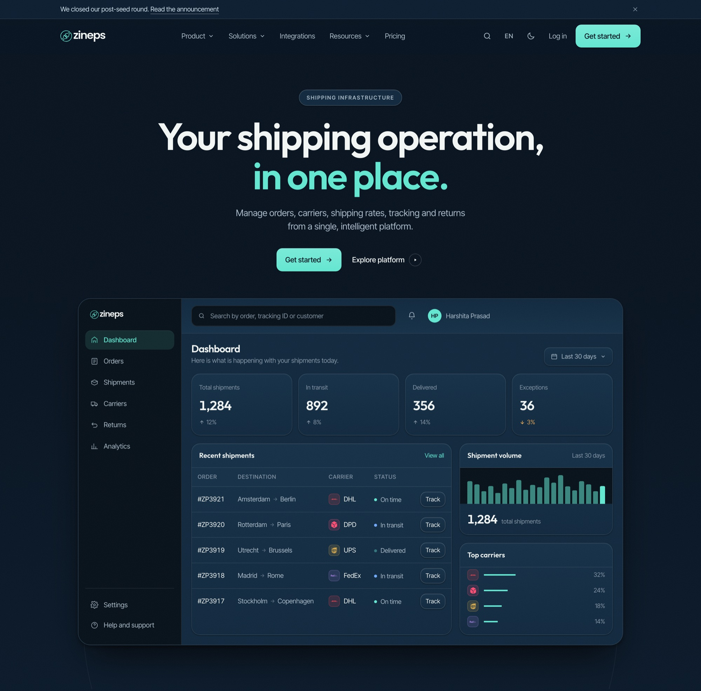
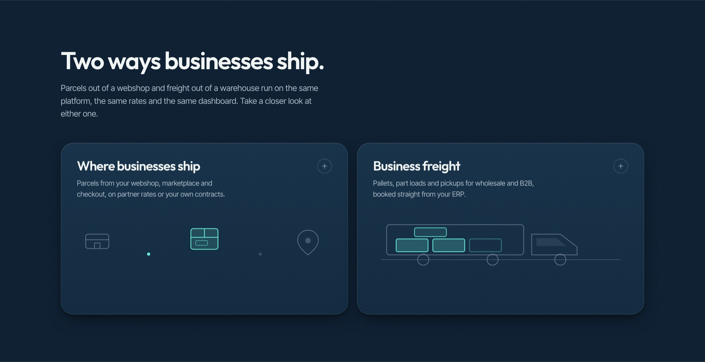
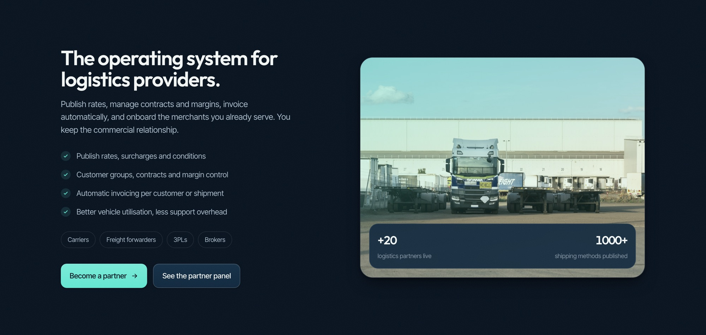
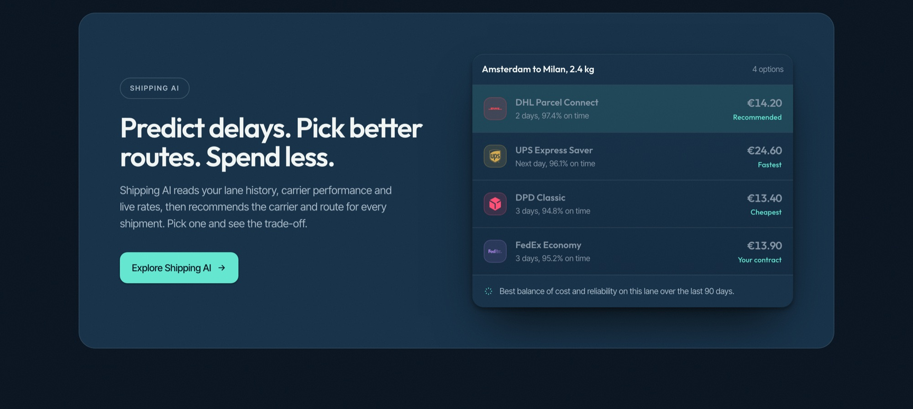
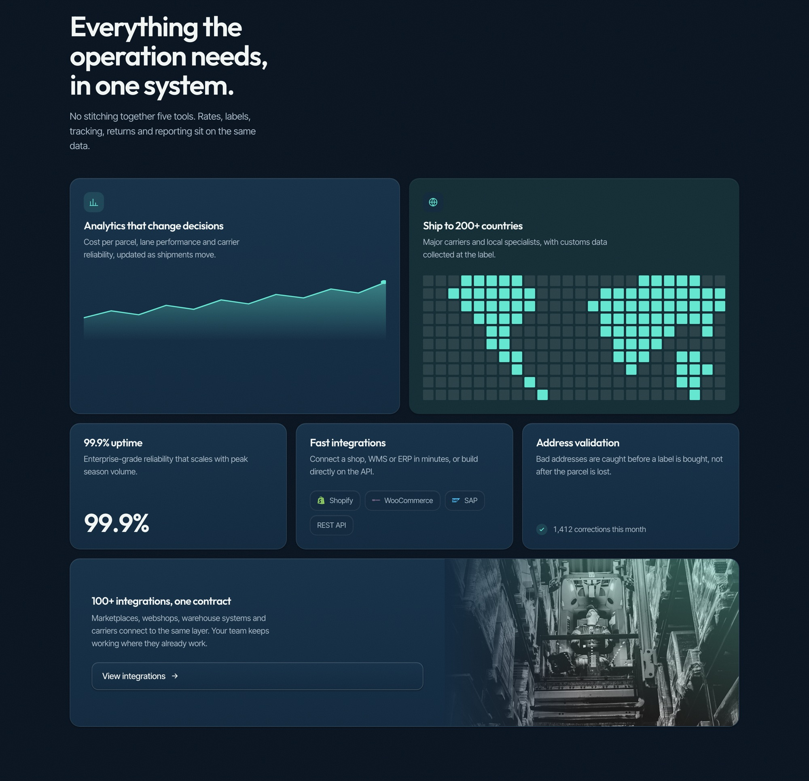
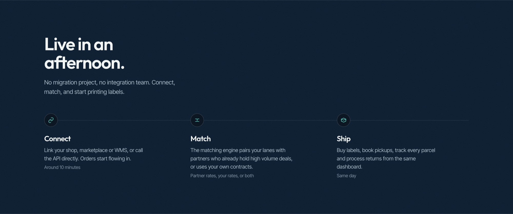
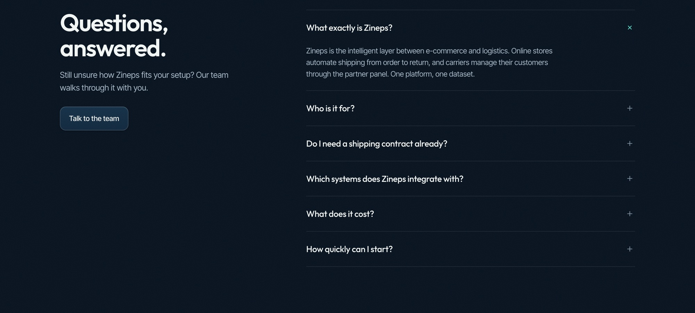
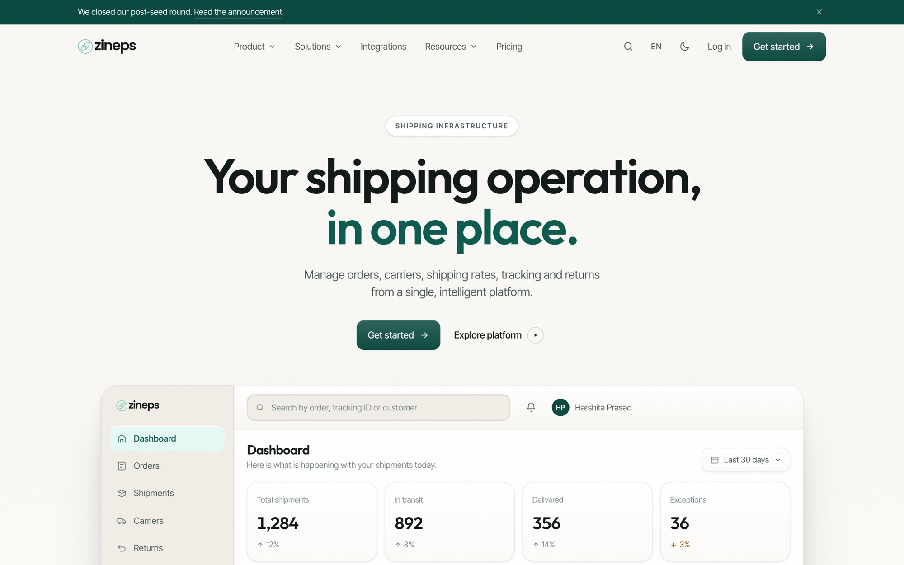

Redesigning the website of a shipping platform that sits between online stores and the carriers that deliver for them.
Role
UX & UI design
Type
Website redesign
Year
2026
Built with
HTML, CSS & JavaScript
The redesigned homepage, in its navy default theme
01 — Overview
One platform between e‑commerce and logistics.
Zineps helps online stores and wholesalers automate shipping, from the order to the return, and gives carriers, forwarders and 3PLs a place to publish their services and manage their customers. One platform and one set of data, with two very different people looking at it.
I redesigned the website around one question: how do you make a product this broad feel clear, credible and easy to start with, in a single scroll?
02 — The challenge
A lot to explain, to two audiences at once.
Two audiences. Merchants want lower shipping costs and less manual work. Logistics partners want to sell their services and keep their customers. Both land on the same page.
A wide product. Orders, labels, rates, tracking, returns, analytics and an AI layer, each worth a page of its own.
An abstract promise. “Partner rates” and “shipping AI” are easy to claim and hard to picture.
03 — Approach
Six decisions that shaped the page.
01Show the product, not a picture of it
The hero holds a working version of the dashboard instead of a static screenshot. Visitors can switch between Dashboard, Orders, Shipments, Carriers, Returns and Analytics, and search the shipments, so the product explains itself before the copy has to.

The hero dashboard: six views to click through, with search and live numbers
02Proof straight after the promise
Right below the hero, three plain numbers say how big the network is, each with one line on what it means for a shop: partners matched to your lanes, destination countries and shipping methods.
The network in three numbers, each with what it means
03Two audiences, one page
Instead of splitting the site, the page gives each audience its own moment. Parcels from a webshop and freight from a warehouse sit side by side as two ways to ship, and logistics providers get a section of their own, written to them, with their own call to action.

For merchants: parcels and freight, side by side

For logistics partners: a section of their own
04Make the AI something you can try
Shipping AI is shown as a real decision: one lane, four carrier options, labelled recommended, fastest, cheapest or your own contract. Picking one shows the trade-off between price, speed and reliability, which says more than a paragraph about prediction models.

Shipping AI as a choice between four real options
05Everything in one system, at a glance
The feature overview is a grid of small, working visuals rather than icons and bullet points: a cost trend, a map of active destinations, integrations, uptime and address checks. Each one can be understood without reading the copy under it.

The platform as a grid of small, working visuals
06Make starting feel small
The last stretch of the page lowers the effort of switching. Three steps, connect, match and ship, each with how long it takes, then the questions people ask before they commit: what it costs, whether they need a contract, and what it works with.

Three steps, each with how long it takes

The questions people ask before they commit
04 — Design system
Calm, technical, and one accent.
A navy default face for a product people keep open all day, with a warm light theme one click away. One accent, Zineps mint, carries every action. Amber only ever appears when a shipment needs attention.
Navy#07121F · Background
Deep blue#10283D · Surfaces
Mint#62E6D0 · Actions
Ink#F1F5F3 · Text
Slate#A9BAC7 · Quiet text
Amber#E0A458 · Exceptions only
AaOutfitHeadlines
AaInter TightText & interface
Four cornersPill · 12 · 18 · 26
Navy, the default

Warm light, one click away
05 — Outcome
A working redesign, not a mockup.
The result is a complete, responsive page built in HTML, CSS and JavaScript. Every view in the hero dashboard works, the menus open and close from the keyboard, the theme can be switched, and motion is toned down for anyone whose device asks for less.